El resultado final de la aplicación es el siguiente:
La pestaña de inicio, que nos redirige a los dos tipos de usuario de la aplicación, ambos con ids diferentes.
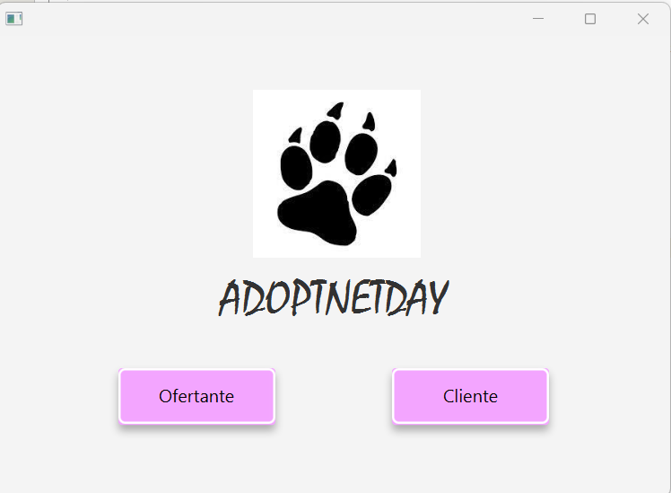
La pestaña de login, donde se redirige o a el inicio de sesión o a la página para registrarse.
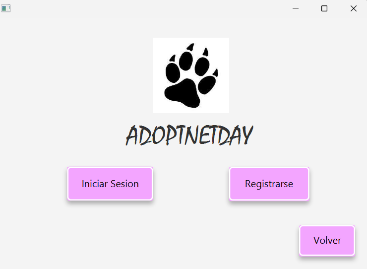
En la sección de registo, simplemente se introducen los datos y se crea el perfil de nuevo usaurio.
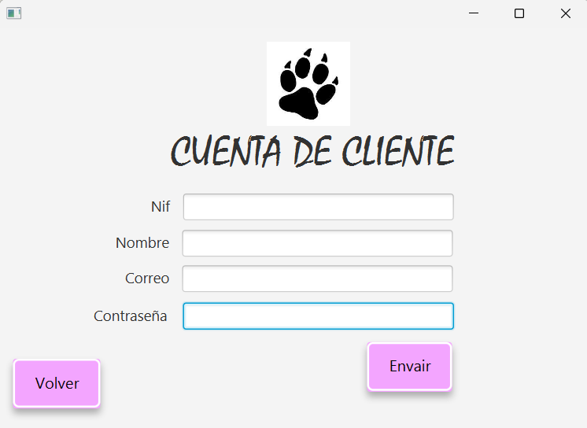
Y en el apartado de inicio de sesión se ponen los datos para que se verifique el usaurio y entrar a la
aplicación principal.
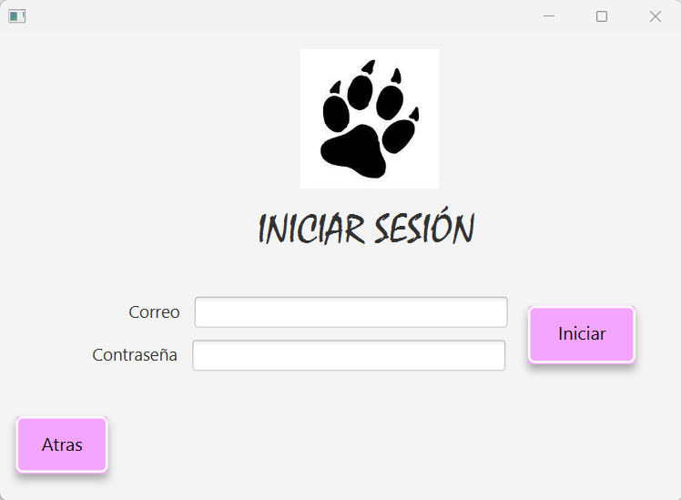
En la sección principal de la aplicación es prácticamente igual de un tipo de usuario a otro, únicamente cambia
en las opciones de la barra superior, ya que el ofertante consta de la amplia gama que vemos.
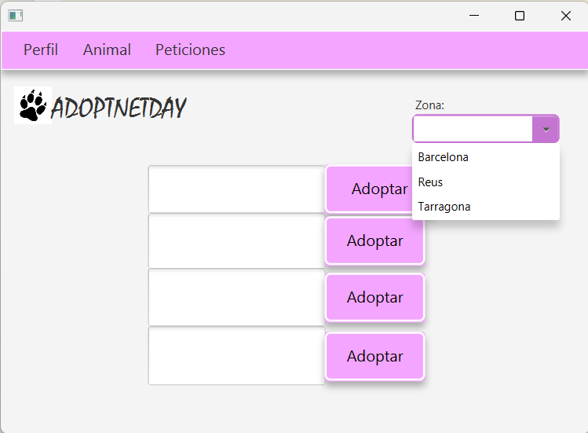
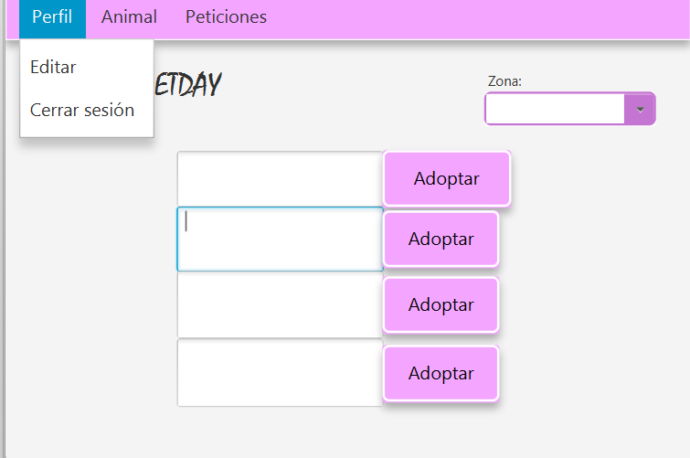
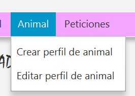
En el aspecto de la edición del perfil, accederemos en la opción Perfil de la barra superior
para poder editar el perfil del usuario que inicie la sesión.
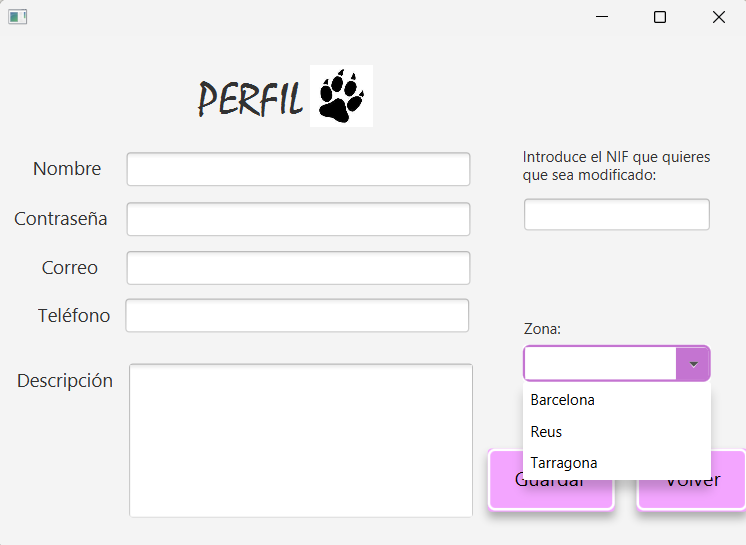
En la sección de creación y edición del animal, que siguen exactamente la misma estructura con
la única diferencia que la función final es diferente.
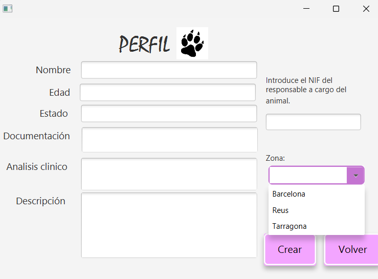
Finalmente, en la parte de la aplicación están los apartados para consultar las solicitudes
de adopción de los animales, que se visualizan en la caja y hasta que el usuario decida mostrarlo.
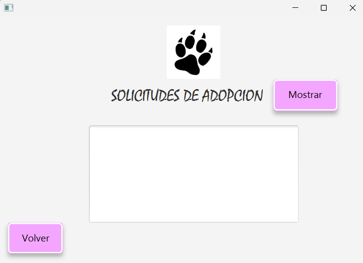
De esta manera podemos ir a la sección de búsqueda para encontrar la información del cliente interesado,
dando paso al trámite final para la adopcción, ya que el acuerdo lo realizarian individualmente
el cliente y el ofertante.
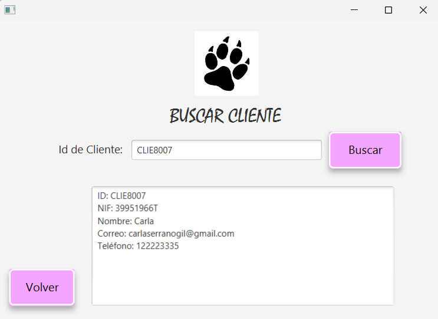